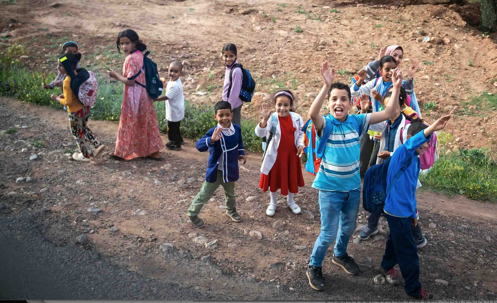
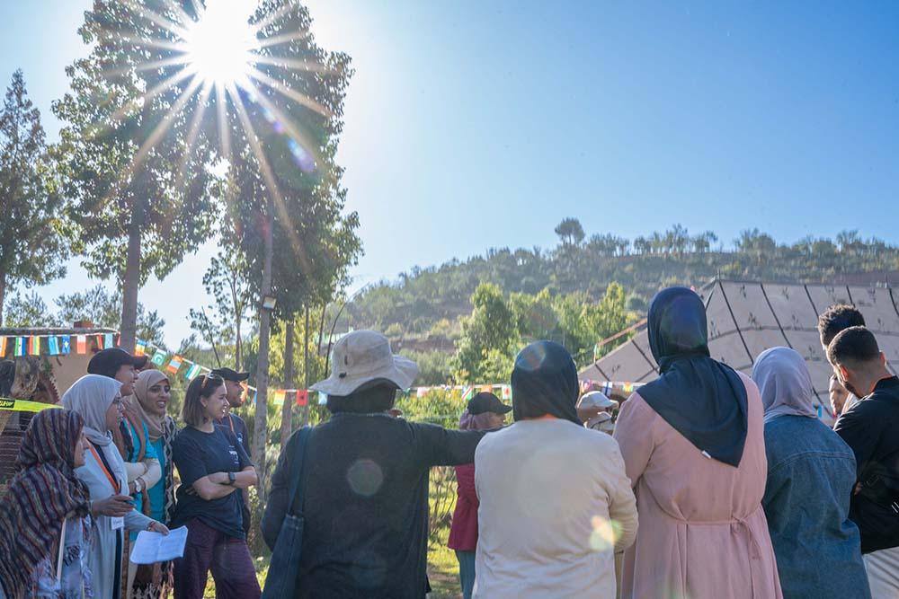
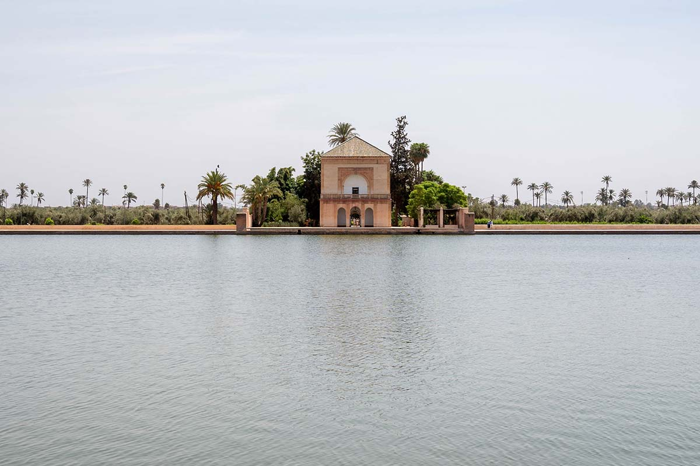
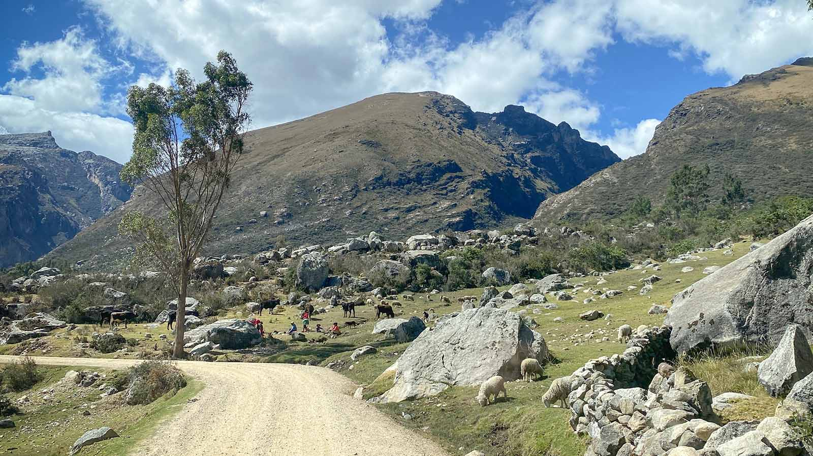
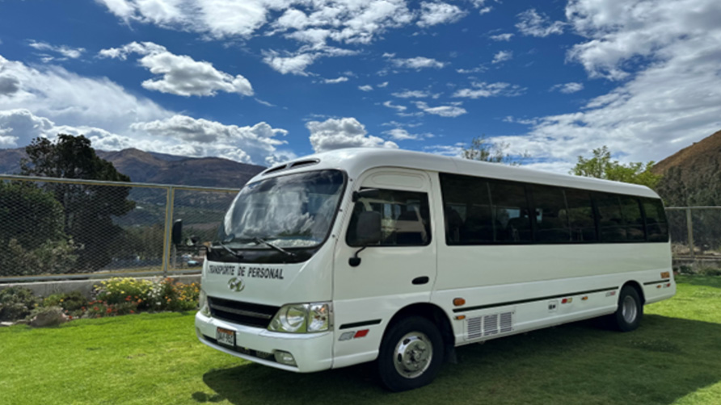
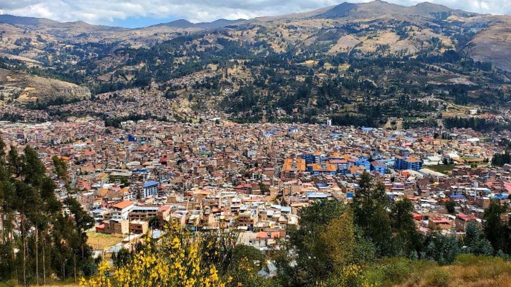
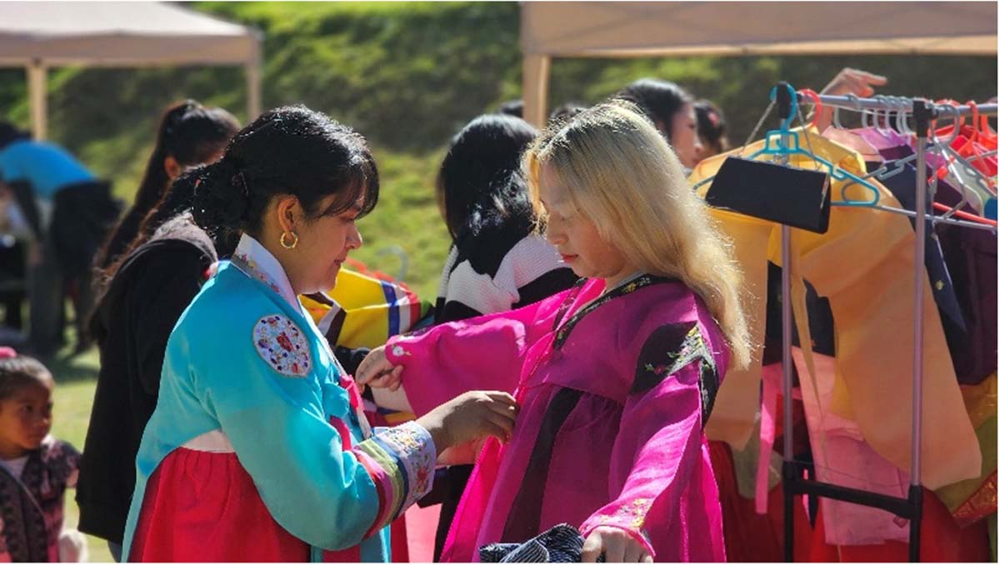
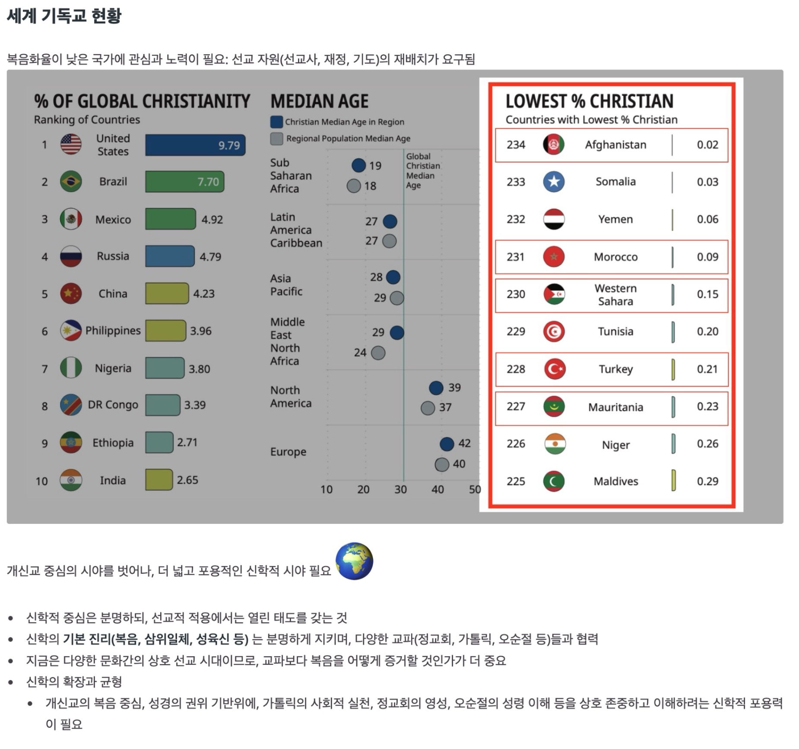
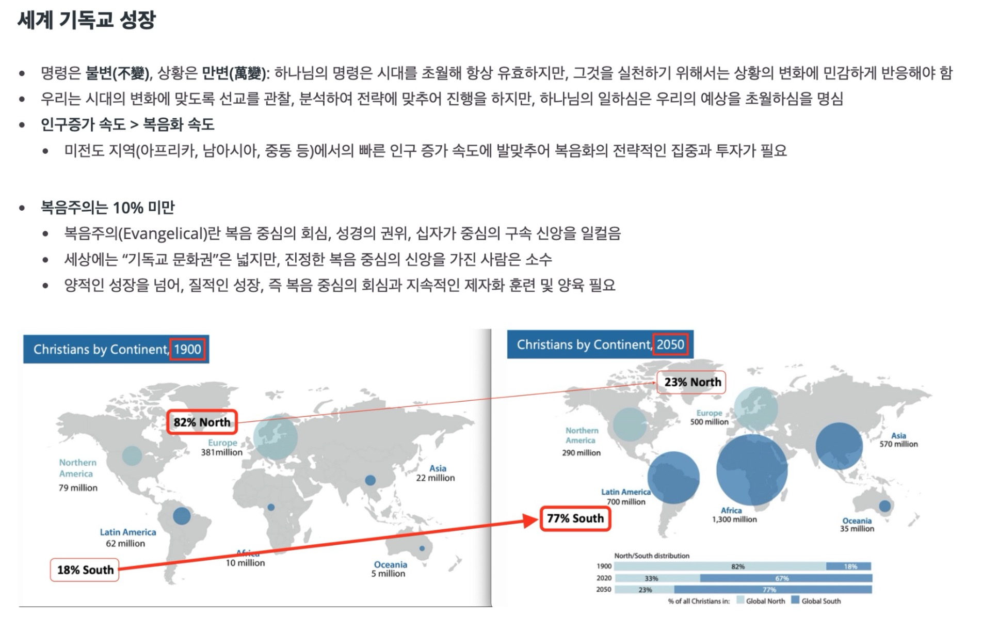

선교소식지 No.1
하나님께서는 우리에게 매일 새롭게 주시는 은혜를 통해 삶의 의미를 깨닫게 하십니다. 우리가 맞이하는 기쁨과 어려움 속에서도 그분의 사랑은 변함없음을 기억하며, 감사하는 마음으로 하루를 살아가기를 소망합니다.
이번 소식지를 통해, 우리 교회와 선교의 이야기를 함께 나누고자 합니다. 현장에서 펼쳐지고 있는 선교 사역과 봉사 활동의 소식들이 여러분의 마음에 작은 감동과 격려가 되길 바랍니다. 또한, 소식지가 우리 모두가 하나님의 사랑 안에서 서로 연결되어 있음을 느끼는 통로가 되기를 기대합니다.
앞으로도 교회 공동체가 하나 되어 믿음 안에서 서로 격려하며, 세상 속에서 빛과 소금의 역할을 감당하는 삶을 살아가길 바랍니다. 소식지를 통해 나눔과 기도의 마음이 더 넓게 퍼지고, 작은 발걸음들이 하나님의 나라를 향한 큰 열매로 이어지기를 기도합니다.
러브레터#1
북아프리카 김광율, 김소망 선교사
이사야 43:19, “보라 내가 새 일을 행하리니 이제 나타낼 것이라 너희가 그것을 알지 못하겠느냐 반드시 내가 광야에 길을 사막에 강을 내리니”
ㅁㄹㅋ는 왕국입니다. 현재의 왕조는 1631년에 시작되어, ㅁㄹㅋ 역사상 가장 오랜 기간 존속해 온 왕조로 기록되고 있습니다. 수많은 암살 시도를 견뎌내며 강압적 통치를 이어갔던 전임 국왕과 달리, 그의 아들인 모ㅎㅁ드 6세 국왕은 통합과 포용, 용서와 자비, 그리고 현대화와 ‘절제된(Moderate) 이슬람’을 국가 운영의 핵심 가치로 내세우고 있습니다. 그 결과, 오랜 역사 속에서 충분히 포용되지 못했던 북부의 리프 부족과 남부의 ㅅ하라위 부족까지 아우르며, 그들의 신뢰를 점진적으로 회복해 가고 있습니다.
특히 현 국왕은 2004년과 2024년, 두 차례에 걸쳐 가정법을 개정함으로써 이슬람 율법상 허용되던 일부다처제를 사실상 불가능한 수준으로 제한하였으며, 종교적으로 7~8세부터 허용되던 여성의 결혼 가능 연령을 18세로 상향 조정하여 여성의 권익과 보호에 있어 중대한 전환점을 마련하였습니다. 또한 2016년 발표된 「ㅁㄹ케쉬 선언」을 통해 자국 내에 거주하는 외국인들의 종교적 모임을 공식적으로 합법화하고, 공권력의 보호 아래 두는 조치를 취하였습니다. 그래서 ㅁㄹㅋ는 다양한 종교의 외국인이 비교적 자유롭고, 또 안전하게 거주할 수 있는 나라가 되었습니다.

반면, 현지인이 경험하는 종교의 자유의 모습은 다릅니다. ㅁㄹㅋ의 복음화는 아직 0.1%를 넘지 못하고 있으며, 기독교 핍박지수(OpenDoor Ministry)는 2009년도(34/100)부터 지속적으로 증가하기 시작하여 2025년도 초에는 74점을 기록하며 세계 21위에 자리하고 있습니다. 2025년 11월에도 집회에 참석하고 집으로 돌아간 한 형제가 여러 주민들에게 붙잡혀 살해당하는 일이 있었습니다. 외국인이 자국민에게 전도하는 행위는 불법이며, 현지인들과 함께 모여 예배를 드리는 일은 즉시 추방 대상이 됩니다. 매해 선교사들이 추방되고 있으며, 이곳에서 이루어지는 모든 예배와 선교는 아직까지 “지하교회” 성격을 띠고 있습니다.
오늘도 지속적으로 상승하고 있는 이 나라의 기독교 박해 지수는 역설적으로 복음이 이 땅에서 얼마나 거침없이 전진하고 있는지를 증언하는 지표이기도 합니다. 불이 없다면 어찌 연기가 나겠습니까. 할렐루야! 2025년 말 기준으로, ㅁㄹㅋ의 주요 대도시마다 적어도 한 곳 이상의 지하교회가 존재하고 있습니다. ㅁㄹㅋ 출신 신자들은 Facebook, Instagram, TikTok 등 다양한 플랫폼을 통해 활발한 미디어 사역을 전개하고 있으며, 그중 일부는 자신의 얼굴과 신분을 공개한 채 담대하게 복음을 증언하고 있습니다. 더 나아가 이슬람 신학교 내에서도 성경과 코란을 비교 연구하기 위한 목적으로 신학생들에게 성경을 구해 오라는 요구가 이어지며, 헌 책방에서 성경을 찾는 일이 점점 잦아지고 있습니다. 이러한 수요에 응답하듯, 한 담대한 사역자는 캐리어 가득 성경을 채운 채 오늘도 ㅁㄹㅋ 전역을 누비며 헌 책방을 찾아다니고 있습니다.
이제 ㅁㄹㅋ에서 우리가 집중해야 할 과제는 크게 두 가지로 정리할 수 있습니다.
첫째는 복음 전파의 지속성입니다. 아무것도 하지 않으면 아무런 변화도 일어날 수 없다는 말처럼, 이 나라는 선교적 활동을 하지 않더라도 비교적 안정적이고 편안한 거주를 허용하는 정책을 가지고 있기에, 선교사는 자칫하면 아무 일도 하지 않은 채 머무는 데에 그칠 위험에 놓이기 쉽습니다. 그러나 현실은 다릅니다. 이 땅은 이미 복음을 갈망하고 질문하는 젊은 세대들로 인해 밭이 희어져 가고 있습니다. 그러므로 더 지혜롭게, 더 담대하게, 그리고 더 체계적인 방식으로 복음 전파의 사명은 멈춤 없이 이어져야 합니다. 아울러 교회 또한 이에 대한 준비를 함께 감당해야 합니다. 이곳의 사역은 언제든 사역자의 추방으로 급작스럽게 중단될 수 있기에, 다음 사역자를 늘 준비하는 구조가 필수적입니다. 18세기, 그린란드에 파송된 선교사와의 연락이 끊기자 순교를 각오하고 즉시 두 명의 선교사를 추가로 파송했던 모라비안 공동체처럼, 한 선교사의 죽음이나 추방으로 사역이 끊어지지 않도록 교회는 지속적으로 차기 선교사를 준비해야 할 것입니다.

둘째는 새롭게 형성되고 있는 현지 교회를 훈련하고 양육하는 사역입니다. 이는 성경 지식이나 조직신학 중심의 교육을 넘어, 영성 형성(Spiritual Formation)에 초점을 두는 일입니다. 가르치는 것보다 삶으로 본을 보이는 일, 드러나는 영역에서 높이 세우는 것보다 보이지 않는 영역에서 깊이 뿌리내리게 하는 일이 요구됩니다. 이러한 사역은 빠르게 반응하고 전진하는 전도의 영역과 달리, 훨씬 더디게 성숙해집니다. 비난과 오해를 통과하며 형성되는 문화적·관계적 신뢰가 필수적이기에, 언어와 문화에 대한 깊은 이해와 그에 상응하는 시간을 견뎌내는 인내가 요구됩니다. 그동안 성경 지식과 신학 교육에 집중해 온 사역의 결과, ㅁㄹㅋ에는 ‘스스로 똑똑하다고 여기는’ 성도들이 끊임없이 논쟁하고 분열하는 모습도 나타나고 있습니다. 가르치고자 하는 우리의 욕구를 내려놓고, 성도의 삶을 통해 도전하는 일은 많은 시간을 요구하며, 무엇보다 선교사 자신이 충분한 성화의 과정을 통과하지 않고서는 감당할 수 없는 사역입니다. 그렇기에 주님께서는 오늘도 선교사들을 더 깊은 거룩의 자리, 곧 지성소를 향해 한 걸음씩 이끌고 계시며, 이는 분명한 축복입니다.

현재 ㅁㄹㅋ는 2년마다 개최되는 아프리카 네이션스컵(AFCON)으로 인해 국가 전체가 들떠 있는 분위기입니다. 특히 어제, 우리 대표팀이 극적인 승리로 16강 진출을 확정 지으며 오늘의 공기는 한층 더 밝고 가벼워졌습니다. 여기에 더해 날씨마저 은혜롭습니다. 5년 이상 지속된 극심한 가뭄 속에서 절수와 단수를 반복적으로 감내해야 했던 시간을 지나, 무려 10년 만에 처음으로 ‘제대로 된’ 우기를 맞이하게 되었습니다. 메말라 가던 댐들에는 다시 물이 차오르기 시작했고, 불과 보름 만에 13억 4천만 입방미터에 달하는 수량이 유입되어, 오히려 바다로 방류해야 하는 상황에까지 이르렀습니다. 그러나 중부 지역의 ㅅㅍ라는 도시는 오랜 기간 누적된 정부 관료들의 부패로 인해 수자원 방류 시스템이 제대로 보수되지 못한 결과, 결국 도시 전체가 침수되는 비극을 겪었고, 그로 인해 수많은 희생자가 발생하였습니다.
하나님께서 작정하여 부으실 때, 우리는 그 은혜를 담아낼 그릇조차 부족함을 절감하게 됩니다. 때가 되면 반드시 비는 내립니다. 그때를 대비해 우리가 함께 준비하고 협력한다면, 큰 비를 담아낼 수 있을 뿐 아니라, 넘치는 물을 지혜롭게 흘려보낼 수 있는 댐 또한 세울 수 있으리라 확신합니다.
러브레터#2
페루 와라스 김도경, 김혜린 선교사
페루 와라스에서의 사역을 돌이켜보면, 인간의 계산으로는 도저히 메울 수 없던 빈자리를 하나님의 신실하신 은혜로 채워오신 ‘기적의 여정’이었습니다. 무엇보다 큰 기쁨은 오랜 시간 눈물로 씨를 뿌렸던 ‘방과 후 학교(After School)’ 사역을 위한 법적 학원 등록(CEM 센터)이 마침내 완료되었다는 소식입니다. 여러 장벽을 만날 때마다 여러분들의 기도는 큰 힘이 되었고, 이제 이 센터는 와라스의 다음 세대를 복음의 군사로 키워낼 거룩한 전초기지가 될 것입니다.

사역을 하며 가장 가슴 아팠던 풍경은 현지 IMA 교회 성도들의 ‘예배를 향한 눈물겨운 여정’이었습니다. 이곳 성도들 중 상당수는 주일 아침마다 험한 산길을 뚫고 1시간에서 길게는 3시간을 달려 교회로 옵니다. 특히 주일에는 대중교통 운행이 급격히 줄어들어, 한 번에 오는 버스가 없기에 두 번, 세 번씩 노선을 갈아타야만 합니다. 먼지 바람 속에 아이의 손을 잡고 몇 번이나 버스를 옮겨 타며 교회에 들어서는 성도들의 땀 젖은 얼굴을 볼 때면, 제 가슴은 늘 먹먹해지곤 했습니다.
“하나님, 예배를 사모하며 이토록 고단한 길을 오는 주의 자녀들을 기억하여 주옵소서!”

이 간절한 기도는 결코 땅에 떨어지지 않았습니다. 한 성도님의 귀한 씨앗 헌금을 시작으로 여러 동역자분들의 사랑이 모여, 마침내 사역용 미니버스를 구입하게 되었습니다. 이제 성도들은 3시간의 고단한 여정 대신 기쁨의 찬송을 부르며 교회로 올 수 있게 되었습니다. 이 차량은 평일에는 방과 후 학교 아이들을 실어 나르는 ‘복음의 통로’로, 주일에는 성도들의 ‘기쁨의 발걸음’으로 귀하게 쓰일 것입니다. 광야에 길을 내시고 사막에 강을 내시는 하나님의 역사가 바로 이곳 와라스에서 실현되고 있음을 고백합니다.
지역 특징: 안데스산맥 해발 3,000m 이상의 고산 지대입니다. 희박한 공기 탓에 저희 가족에게 고산병은 늘 영적인 싸움이자 육체적인 도전이지만, 그만큼 하나님을 더 의지하게 되는 은혜의 처소이기도 합니다.

사역 현황: 현재 IMA 교회를 중심으로 장년, 청년, 중고등부, 주일학교가 아름답게 성장하고 있습니다. 최근에는 한국 문화의 날 행사를 통해 현지 청년들에게 한글과 한국 음식을 매개로 다가가며 복음의 지경을 넓혀가고 있습니다.
2026년부터 본격적으로 전개될 방과 후 학교(After School) 사역은 와라스 지역 어린이와 청소년들에게 실질적인 배움의 기회를 제공하는 동시에, 예수 그리스도를 인격적으로 만나는 핵심 통로가 될 것입니다.

사역 계획: 한글 및 한국 문화 교육, 방과 후 돌봄 프로그램을 통해 지역사회와 깊이 소통하며 아이들에게 예수님의 사랑을 전하고자 합니다.
목표: 단순한 지식 전달을 넘어, 아이들이 하나님 나라의 가치관으로 무장하여 미래의 현지 교회 리더로 성장하도록 돕는 것입니다.
방과 후 학교: 센터 사역을 함께 이끌어갈 신실한 현지 사역자들을 보내주시고, 운영에 필요한 재정이 하나님의 방법으로 지속적으로 채워지도록.
선교사 가족의 강건함: 저희 부부의 고산병이 완화되어 건강하게 사역을 감당하며, 미국에서 학업 중인 두 아들(하민, 정민)이 타지에서도 하나님의 선하신 인도를 날마다 경험하도록.
현지 리더십: 함께 동역하는 빅토르(Victor) 목사님의 건강을 붙들어 주시고, IMA 교회의 모든 리더가 성령 충만하여 든든히 서 가도록.

